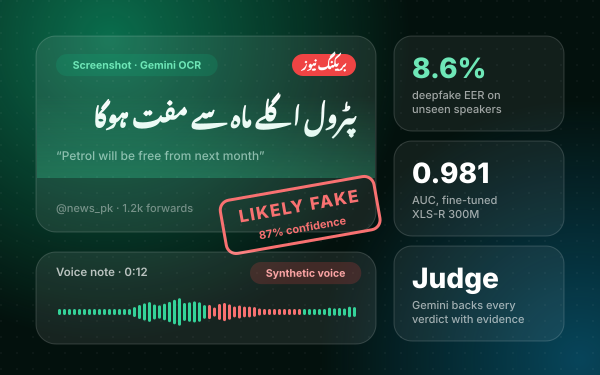

Sachai Check · Final Year Project
Fact-checks Urdu news and catches deepfake voices
Detects fake Urdu news (text, Roman Urdu and screenshots via Gemini OCR) and voice deepfakes, with a Gemini judge that shows its evidence.
8.6%EER, unseen speakers
0.981AUC
49.5%baseline EER
Code
In development